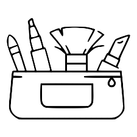
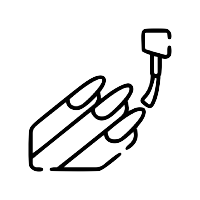
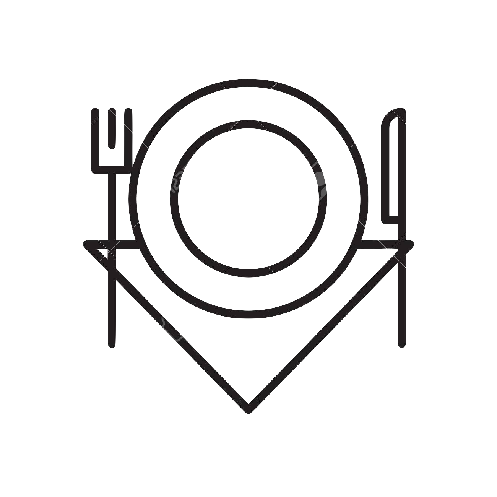
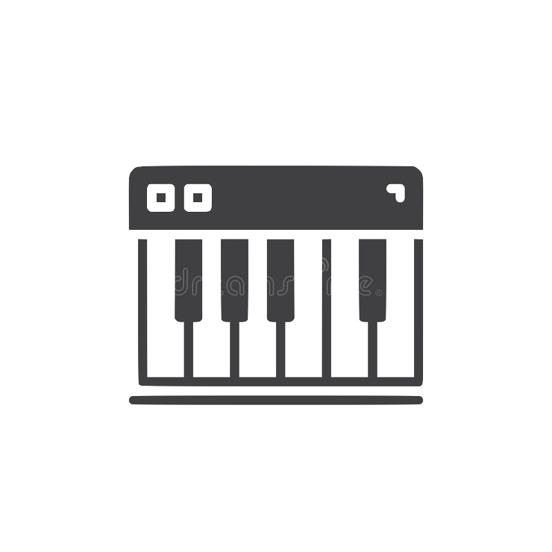
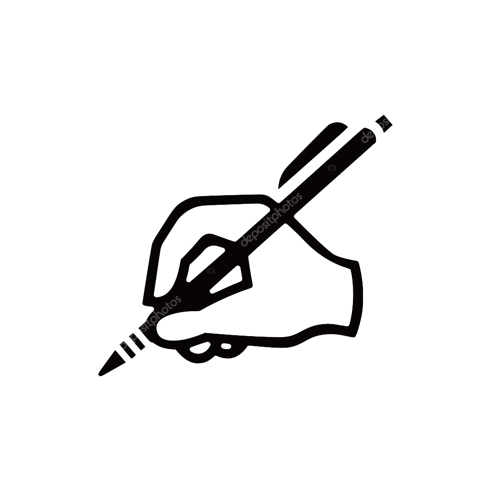
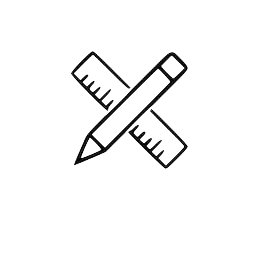
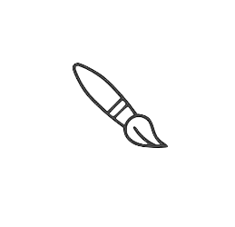
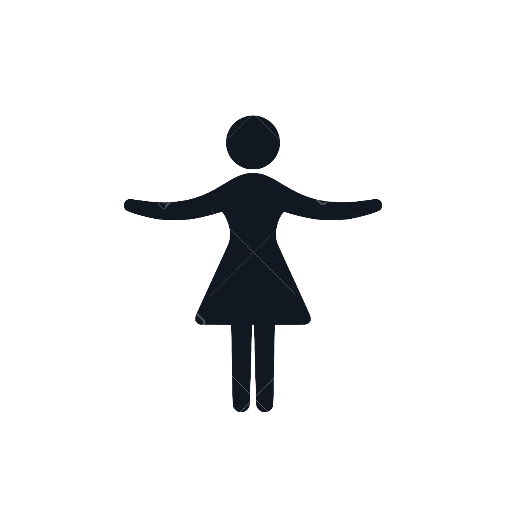
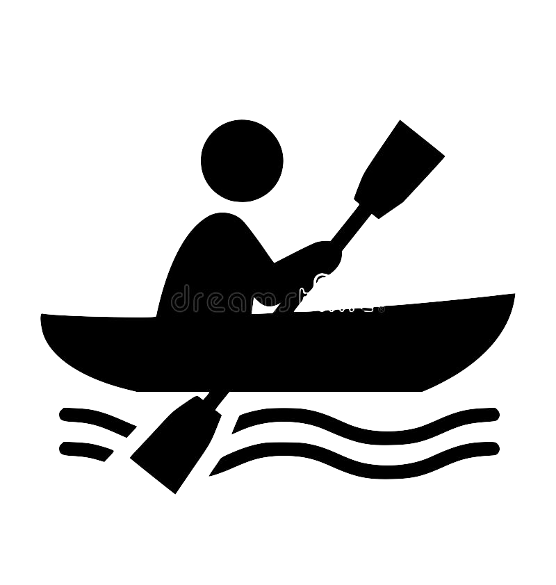

Profil
À propos de moi
Je me présente : Michelle Sue !
Je m'appelle Michelle Sue, j'ai 20 ans et je suis en formation en alternance avec la CCI en tant que Développeur Web et Web Mobile.
Je suis une fille déterminée qui s'accroche toujours et se mets à fond dans tout ce que j'entreprends. J'ai aussi une capacité à comprendre et apprendre assez rapidement. Je suis également plutôt autonome : lorsque j'ai des doutes ou que j'ai dû mal avec quelque chose, je me renseigne, que ce soit sur Internet ou dans des livres. Il n'y a qu'après avoir effectué mes propres recherches que je demande de l'aide si j'en ressens la nécessité.
Je suis plutôt perfectionniste : j'ai dû mal à lâcher l'affaire sur un travail/projet tant que je ne suis pas satisfaite de celui-ci. Je suis également très timide : je ne suis jamais vraiment à l'aise avec le fait de parler et/ou expliquer quelque chose devant les gens.
Langues
-

Français
Langue maternelle -

Anglais
Lu, écrit et parlé : pratique régulière. -

Japonais
Notions scolaires -
Italien
Faibles notions -

Espagnol
Faibles notions
Informatiques
HTML
CSS
PHP/MySQL
JavaScript
Python
JQuery
Formations
&
Expériences
Études
-

Baccalauréat technologique
Lycée Blaise Pascal
Spécialité Système d'Information et Gestion.
Obtention du diplôme avec mention Assez Bien en 2017. -
Mineure en psychologie
Université de Montréal (UdeM)
Première année de license en psychologie. -

Développeur Web et Web mobile
Chambre du Commerce et de l'Industrie (CCI)
Expériences
-

Préposée à l'entretien pour personnes en perte d'autonomie
Répit-Ressources de l'Est de Montréal
Réaliser la liste de tâches ménagères faites par les clients. -
Barista/Serveuse
Café El Mundo
Accueillir et servir les clients;
Ouvrir et fermer le café.
Loisirs
Artistiques

Esthétiques
Coiffure
Maquillage

Manucure
Photographie
Paysages

Nourriture

Portraits
Musique
Chant

Piano

Cinématographie
Films
Séries
Tutoriels
Littérature

Lecture

Écriture

Arts plastiques

Dessins

Peintures
Artisanat
Activités sportives


Sports individuels
Natation
Tir à l'arc
Sports collectifs
Randonnée

Va'a
Contacts